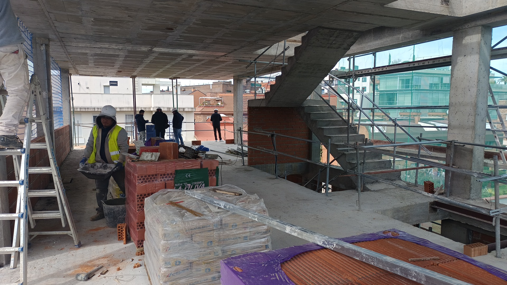
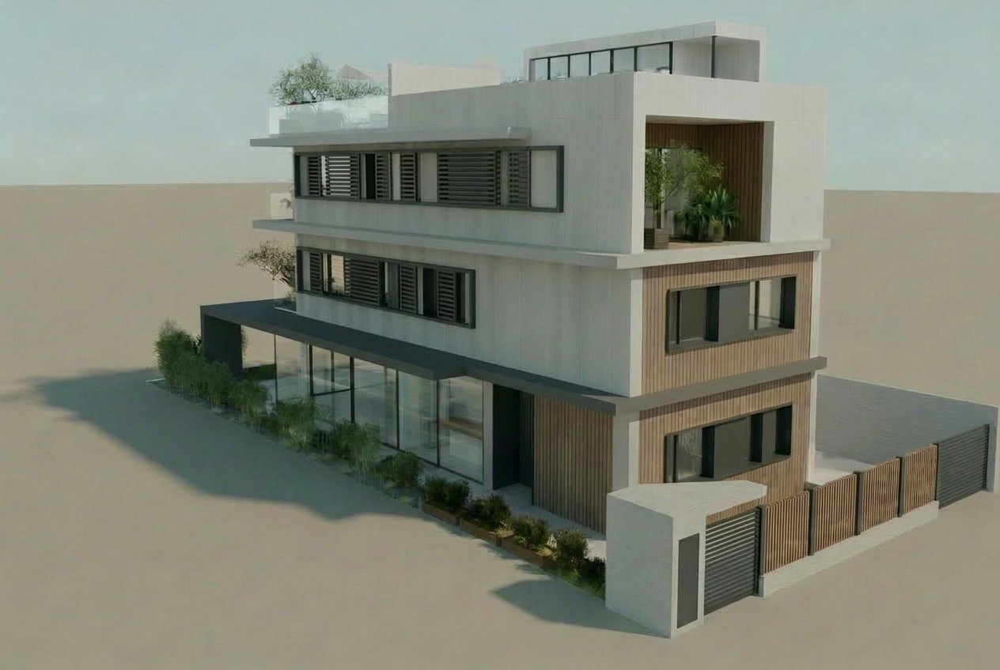

Ponemos a su disposición nuestra amplia experiencia en el sector: participamos en numerosos proyectos de construcción, rehabilitación y reformas, como Dirección Facultativa, Dirección de Ejecución de obras, Coordinador de Seguridad y Salud y Control de calidad.
